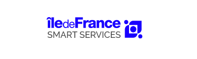

Some projects I was involved in:
|  |
Île-de-France Smart Services
I lead the consulting team building this platform of services, for Paris region citizens, businesses and local authorities. These services, based on private and public data, are all co-constructed with partners.My personal favorites are:
|
|---|---|
|
Quantum ecosystem report
I led the consulting team in charge of writing this report, with France Digitale, the biggest european association of startups. I'm really enthusiastic about this technology (well... this website's name might be a hint ;-).I find particularly refreshing the way it is going to redefine computing (at least for a part), challenge cybersecurity standards and make our physical sensors more precise than ever. |